Synology (群晖)
Putty 连接
登录群晖
- 使用SSH，输入地址，端口（22） 打开命令窗口
- 输入群晖账户和密码
- 输入 sudo -i 切换到root 下，提供权限，此时，再次输入账号的密
- 输入: cd /volume1 切换到容器1，这里根据你的容器名称
- 然后使用 ls 查看内容列表
运行Python 程序
需要先安装Python，直接在套件中安装即可。
运行python，切换到对应文件夹下，python3 test.py
PowerShell 连接
群晖上启动 SSH 功能，并设置一个可以访问的端口默认22如果不能访问，设置其他端口
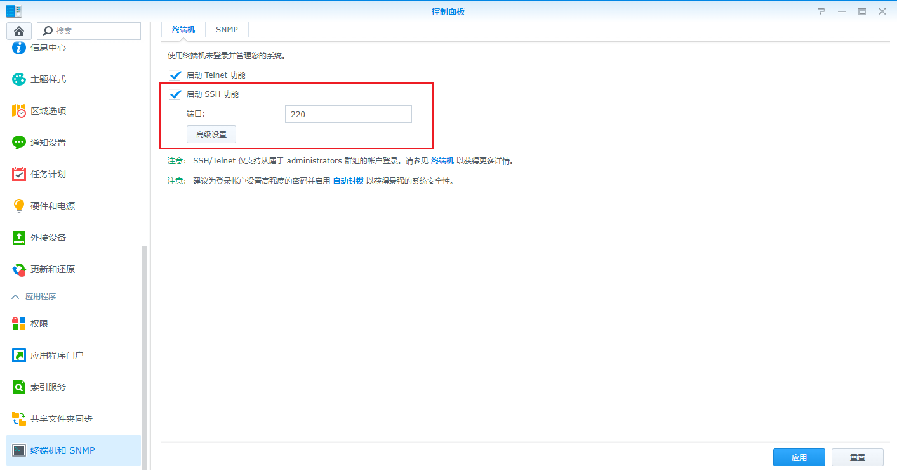
使用 PowerShell 登录，输入 ssh username@domain -p port，账号和地址真确，会提示 ECDSA host key for ip address 否则提示： not in list of known hosts ，然后提示输入密码，输入密码不可见，输入成功后显示账号和主机名称。
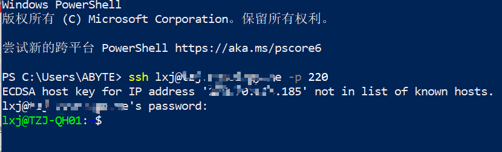
切换到root账户，可以看到当前是 $ 符号，表示非root账号，输入：sudo -i， 再次输入密码，此时变为 # ，表示 root 账户
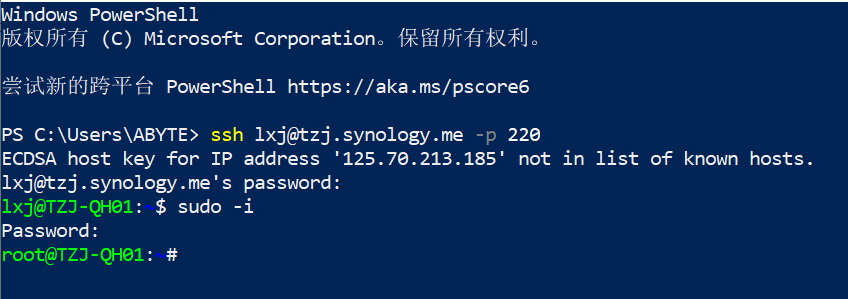
切换到根目录 cd ..,将 ~# 变为 /#，并用 ls ,查看目录
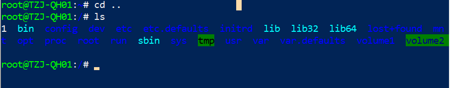
/ : 表示根节点
~ : 表示当前登录用户的 home 目录
如果以 root 账号登陆，~ 代表 /root/ 目录，当你任何环境下输入： #cd ~ 会进入到 /root 目录。
Docker 操作
查询镜像
docker 安装在 lib64 里面 ，输入 cd lib64
列出容器：docker ps，命令手册
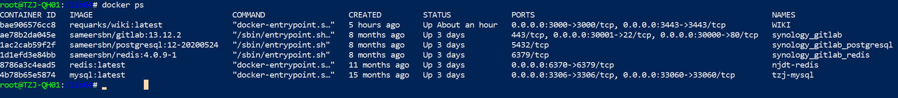
获取容器/镜像的元数据：docker inspect，如：查看WIKI这个容器的所有挂载信息：
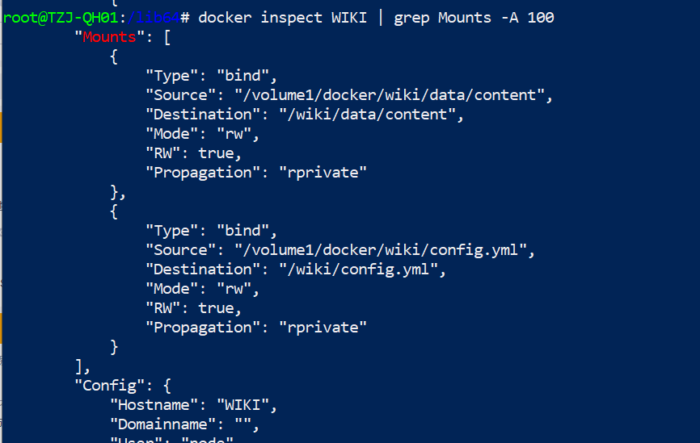
命令说明：
grep: 表示全局正则表达式Mounts: 匹配挂载开始-A: 所有100: 返回的行数Source: 宿主的目录，也就是我们看得见的目录Destination: 容器目录
拉取镜像
现在的群晖在 Docker hub 里面显示查询镜像失败，获取不到镜像，使用命令行获取
参照命令行章节，连接群晖
sudo -i 获取到超级用户权限
搜索镜像，如: mongo，如数命令：
docker search mongo
搜索结果：
NAME DESCRIPTION STARS OFFICIAL AUTOMATED
mongo MongoDB document databases ... 1989 [OK]
mongo-express Web-based MongoDB admin int... 22 [OK]
mvertes/alpine-mongo light MongoDB container 19 [OK]
mongooseim/mongooseim-docker MongooseIM server the lates... 9 [OK]
torusware/speedus-mongo Always updated official Mon... 9 [OK]
jacksoncage/mongo Instant MongoDB sharded cluster 6 [OK]
mongoclient/mongoclient Official docker image for M... 4 [OK]
jadsonlourenco/mongo-rocks Percona Mongodb with Rocksd... 4 [OK]
asteris/apache-php-mongo Apache2.4 + PHP + Mongo + m... 2 [OK]
19hz/mongo-container Mongodb replicaset for coreos 1 [OK]
nitra/mongo Mongo3 centos7 1 [OK]
ackee/mongo MongoDB with fixed Bluemix p... 1 [OK]
kobotoolbox/mongo https://github.com/kobotoolb... 1 [OK]
valtlfelipe/mongo Docker Image based on the la... 1 [OK]
拉取镜像： docker pull mongo:latest，冒号后面需要跟版本号（latest：表示最新的版本号）
使用中转加速拉取，在群晖里面配置加速
本期涉及的一些网站和链接：
MySQL
<a name="mysql-install"></a>
安装
下载镜像后启动安装，仅需要设置下端口映射和环境变量，其他保持默认。
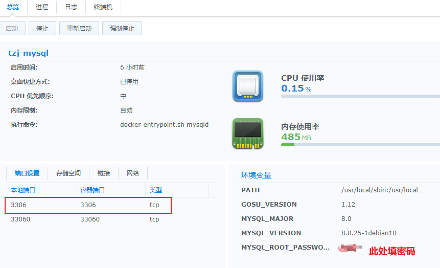
操作
浏览器登录 DSM，进入 Mysql 容器，选择终端机，点击新增，选择新增的 bash（不能使用默认的控制台，需要新增一个控制台）
#这里不知道为什么不能输入123，是复制的
mysql -uroot -ptzj123

使用 help 命令查看
Wiki
安装
环境需求说明：2核 1G内存
打开Dcoker，在注册表搜索 wiki,找到 requarks/wiki ，选中后点击下载
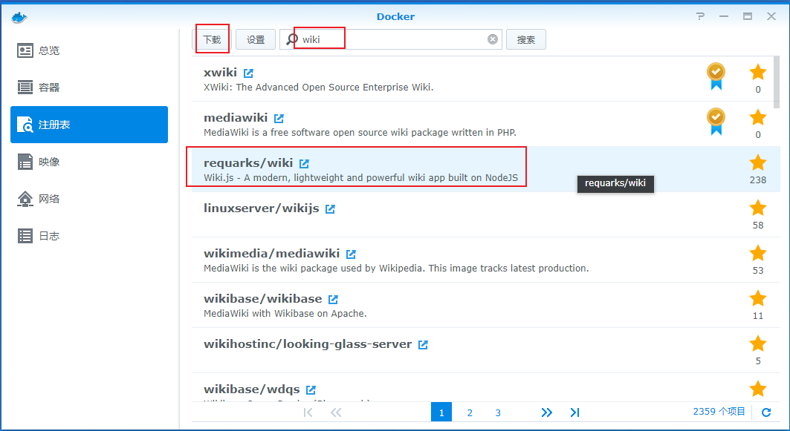
下载后在映像如图
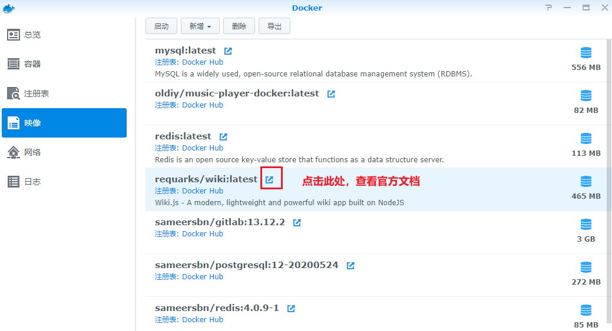
配置mysql数据库
Mysql容器的安装参考: MySQL 安装
在数据库里面创建好数据库，如:wiki
配置环境变量
启动镜像：在镜像列表中选中 wiki ，点击启动：
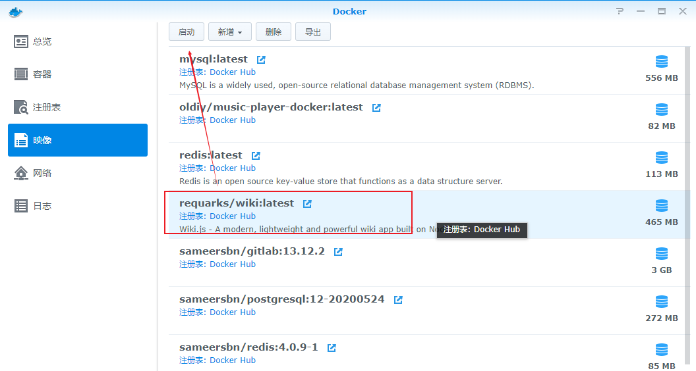
常规设置:填写容器名称，然后点击 高级设置
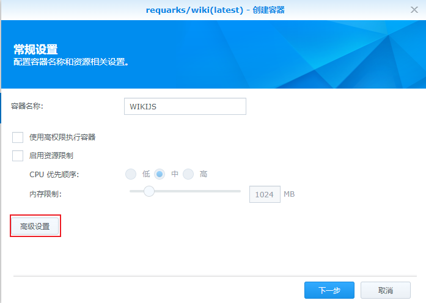
高级设置：启用自动重新启动，可勾选
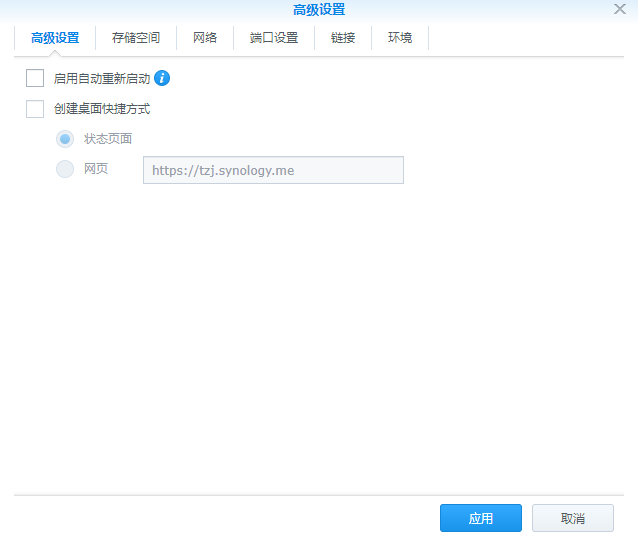
端口配置，http：3000，https：3443（但是目前无法使用）
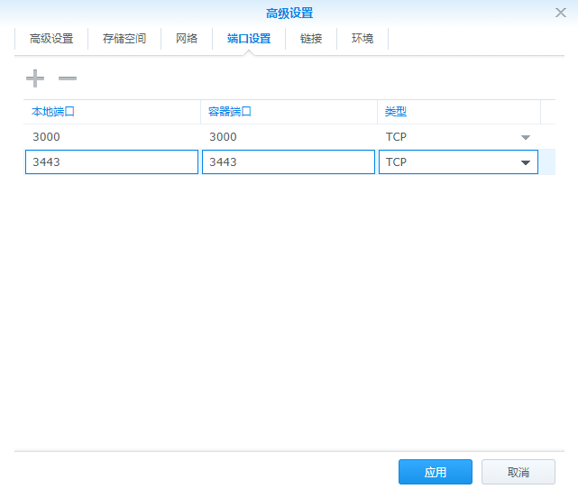
配置环境变量，根据官方手册如下：
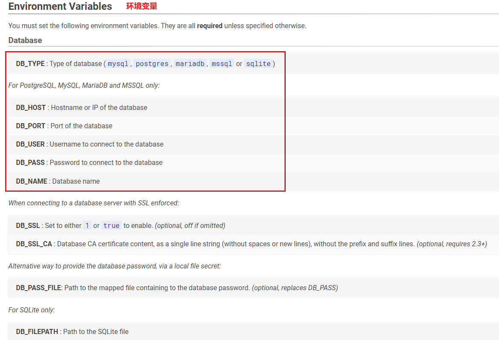
对应配置如下：
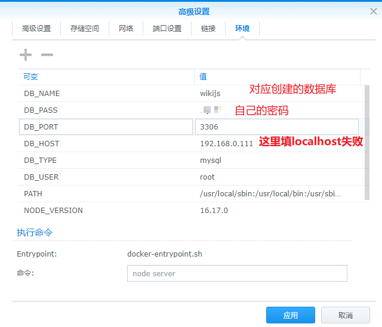
配置文件启动
使用配置文件启动，需要存储空间进行挂载，让容器加载我们挂载的配置文件。
官网上对挂载配置文件说明，看到容器会读取 /wiki/config.yml配置文件，配置文件模板
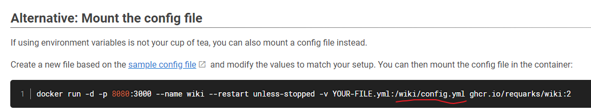
群晖上的目录
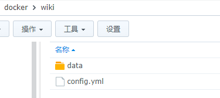
编辑好配置文件后，按照下图挂载，忽略 content 的挂载

配置文件主要内容：
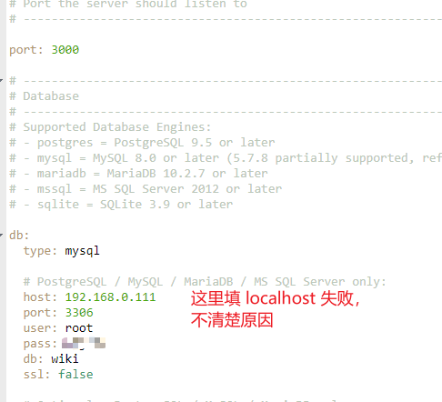
启动容器，使用 http://你的IP地址或者域名:3000访问
注意还不能使用https访问，这是个问题，后面会讲
HTTPS访问
停止容器
注：官网上说可以简单配置 LETSENCRPT 实现 Https，但是没成功，还是使用自定义密钥的方式来做
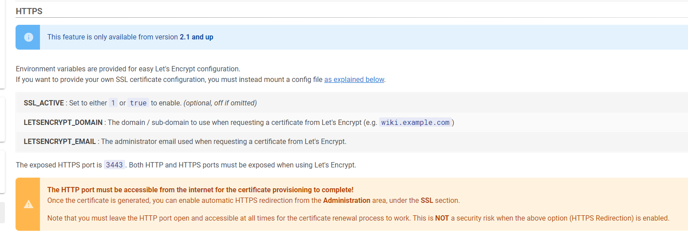
创建证书，参看 创建证书
挂载证书目录，还是看下图，我们会将证书拷贝到 docker/wiki/data/content中
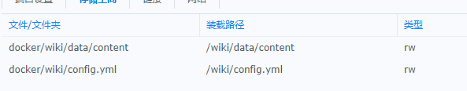
为什么是这个目录？ 首先，通过 docker inspect wiki 查看这个目录是容器本身存在的，并且可以挂载的，我们也可以挂载其他的目录，但是必须是/wiki/...这样的。
！！！不能直接挂载/wiki/data ！！！
下载证书，创建后下载下来，解压拷贝到群晖的文件夹下
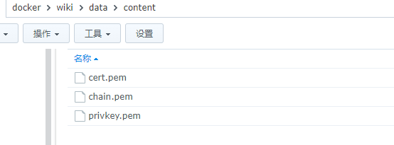
修改配置文件
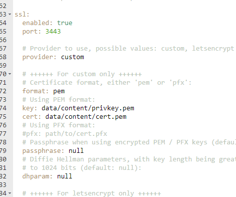
启动容器，使用 https://你的ip或者域名:3443 访问